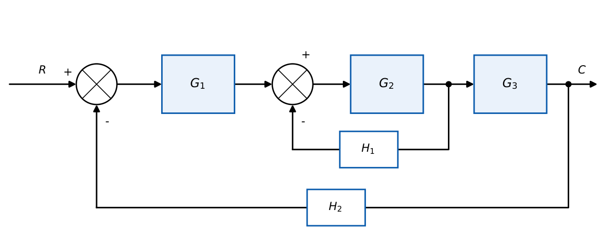

Block Diagram Representation
In this chapter
Reduce a multi-loop block diagram to a single transfer function. Reliable 2-mark question: the trick is knowing which summing/take-off point to move and what to multiply by.
5.1 Core concept
A block diagram shows signal flow between subsystems. Elements: block (transfer function), summing point (algebraic sum, signs at the arrows), take-off (pick-off) point (copies a signal without loading it), and arrows (signal direction).
5.2 Basic reductions
Cascade: \(G_1G_2\). Parallel: \(G_1\pm G_2\). Negative feedback loop: \(\dfrac{G}{1+GH}\). Positive: \(\dfrac{G}{1-GH}\).
Unity-feedback conversion: \(\dfrac{G}{1+GH}=\dfrac{1}{H}\cdot\dfrac{GH}{1+GH}\).
5.3 Moving points: the rules
| Move | What to do |
|---|---|
| Take-off point from before \(G\) to after \(G\) | put a block \(1/G\) in the taken-off branch |
| Take-off point from after \(G\) to before \(G\) | put a block \(G\) in the taken-off branch |
| Summing point from before \(G\) to after \(G\) (for the added signal) | put \(G\) in that branch |
| Summing point from after \(G\) to before \(G\) | put \(1/G\) in that branch |
| Two adjacent summing points | may be interchanged and merged |
| Take-off past a summing point | not allowed directly: add a matching summing branch |
The guiding idea: the total transfer from every input to every output must stay unchanged, so a block “crossed” by a branch must be compensated by that block or its inverse.
5.4 Reduction procedure
- Combine cascade blocks and parallel blocks.
- Eliminate inner (nested) feedback loops first.
- Shift summing/take-off points only to free the loops that interlace (cross).
- Repeat until one block remains; check the sign of every loop.
5.5 Worked examples

Inner loop \(G_2\) with \(H_1\): \(G_2'=\dfrac{G_2}{1+G_2H_1}\). Outer: forward path \(G_1G_2'G_3\), feedback \(H_2\): \[ \dfrac CR=\dfrac{G_1G_2G_3}{1+G_2H_1+G_1G_2G_3H_2}. \] Numbers: \(G_1=10\), \(G_2=\dfrac1{s+1}\), \(G_3=\dfrac1{s+2}\), \(H_1=H_2=1\): denominator \(1+\dfrac1{s+1}+\dfrac{10}{(s+1)(s+2)}=\dfrac{s^2+4s+14}{(s+1)(s+2)}\), so \(\dfrac CR=\dfrac{10}{s^2+4s+14}\): \(\omega_n=\sqrt{14}\), \(\zeta=\dfrac{4}{2\sqrt{14}}=0.53\).
In a cascade \(G_1\to G_2\) a feedback \(H\) is taken from the output of \(G_1\) (between the blocks) back to the input summer. To make it a standard loop around \(G_1G_2\), move the take-off to the output of \(G_2\): it now sees an extra factor \(G_2\), so put \(G_2\) in the branch and the feedback becomes \(H/G_2\). Then \(\dfrac CR=\dfrac{G_1G_2}{1+G_1G_2\cdot H/G_2}=\dfrac{G_1G_2}{1+G_1H}\), agreeing with the direct result (loop \(G_1H\) only).
Forward path \(G_1+G_2\) (parallel), feedback \(H\): \(\dfrac{G_1+G_2}{1+(G_1+G_2)H}\).
For \(R\) and disturbance \(D\): superpose. With \(D\) entering after \(G_1\), \(\dfrac CD=\dfrac{G_2}{1+G_1G_2H}\) and \(\dfrac CR=\dfrac{G_1G_2}{1+G_1G_2H}\); total \(C=\dfrac CRR+\dfrac CDD\).
5.6 Physical interpretation
Reduction is algebra on the equations \(C=GE\), \(E=R-HC\), block by block; the diagram only organises the equations. Loops multiply around the circuit; parallel paths add.
For a single-loop system: \(\dfrac{\text{forward-path gain}}{1+\text{loop gain}}\) with the sign of the loop gain set by the feedback sign. For several touching loops, the denominator is \(1+\sum(\text{loop gains for negative feedback})\). Use Mason’s formula (next chapter) when loops interlace.
(i) Moving a take-off point across a summing point without compensation. (ii) Forgetting that a block that is passed in the branch must be compensated: take-off before\(\to\)after needs \(1/G\), after\(\to\)before needs \(G\); summing point before\(\to\)after needs \(G\), after\(\to\)before needs \(1/G\). (iii) Wrong sign on positive-feedback inner loops: \(G/(1-GH)\). (iv) Cancelling \(G\) against \(1/G\) when both are functions of \(s\) and unstable.
Q1. Two blocks \(G_1\), \(G_2\) in parallel with the outputs summed: (A) \(G_1G_2\) (B) \(G_1+G_2\) (C) \(G_1/G_2\) (D) \(\dfrac{G_1}{1+G_1G_2}\).
Q2. A take-off point is moved after block \(G\). The branch must be multiplied by (A) \(1/G\) (B) \(G\) (C) \(1\) (D) \(-G\).
Q3. Positive feedback loop with forward gain \(G\) and feedback \(H\): (A) \(\dfrac{G}{1+GH}\) (B) \(\dfrac{G}{1-GH}\) (C) \(\dfrac{GH}{1+GH}\) (D) \(GH\).
Answers: Q1 (B). Q2 (A). Q3 (B).
Q4. A unity negative feedback loop has \(G(s)=\dfrac{1}{(s+1)^2}\). \(C/R=\) (A) \(\dfrac1{s^2+2s+2}\) (B) \(\dfrac{1}{s^2+2s+1}\) (C) \(\dfrac{1}{s^2+2s}\) (D) \(\dfrac{1}{s+2}\).
Q5. In the nested-loop example set \(G_1=G_2=G_3=1\), \(H_1=1\), \(H_2=2\). Then \(C/R=\) (A) \(\dfrac14\) (B) \(\dfrac13\) (C) \(\dfrac12\) (D) \(\dfrac15\).
Answers: Q4 (A): \(\dfrac{1}{(s+1)^2+1}\). Q5 (A): \(\dfrac{1}{1+1+2}=\dfrac14\).
Q6. Same as Q5 but \(H_1=0.5\), \(H_2=1\): \(C/R=\) (two decimals).
Q7. \(G_1=2,\ G_2=3,\ H=0.5\) in the form \(\dfrac{G_1G_2}{1+G_1G_2H}\): value .
Answers: Q6: \(\dfrac1{1+0.5+1}=0.40\). Q7: \(6/(1+3)=1.5\).
Q8. Which are valid block-diagram moves? (A) take-off past a block (with \(G\) or \(1/G\) compensation) (B) interchange two summing points (C) move a take-off past a summing point with no change (D) combine parallel blocks.
Answers: Q8: (A), (B), (D).
A unity-feedback system has forward path \(G_1G_2\) with an extra feedback \(H_2\) from the output of \(G_1\) to the input of \(G_1\): \(C/R=\dfrac{G_1G_2}{1+G_1H_2+G_1G_2}\). With \(G_1=\dfrac1s\), \(G_2=\dfrac1{s+1}\), \(H_2=1\): \(\dfrac{1}{s(s+1)+(s+1)+1}=\dfrac1{s^2+2s+2}\).
T1. Reduce: forward \(G_1G_2\), inner feedback \(H_1\) around \(G_2\), outer unity feedback. Write \(C/R\).
T2. What compensation is needed to move a summing point from after \(G\) to before \(G\)?
Answers: T1: \(\dfrac{G_1G_2}{1+G_2H_1+G_1G_2}\). T2: multiply the added branch by \(1/G\).
- Cascade \(\times\); parallel \(+\); loop \(G/(1\pm GH)\).
- Take-off point: moving forward past \(G\) \(\Rightarrow\) branch gets \(1/G\); backward \(\Rightarrow\) \(G\). Summing point (added signal): forward \(\Rightarrow\) \(G\); backward \(\Rightarrow\) \(1/G\).
- Eliminate inner loops first; superpose for multiple inputs.
- Interlacing loops: switch to Mason’s rule.